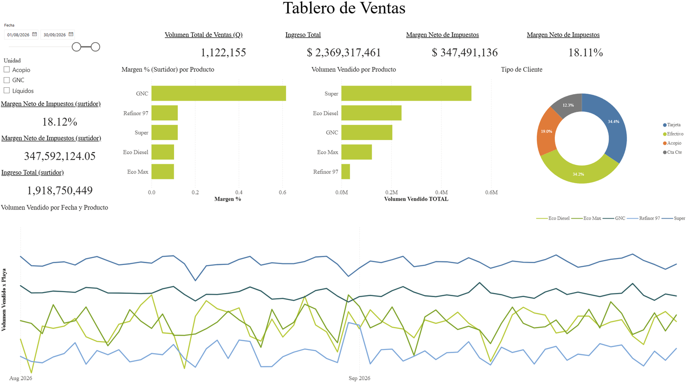
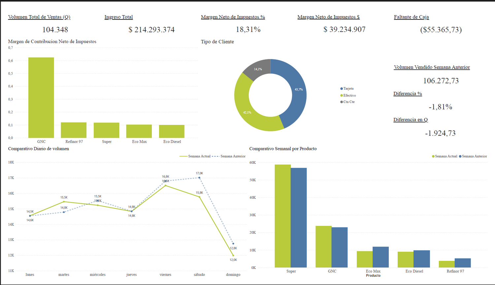
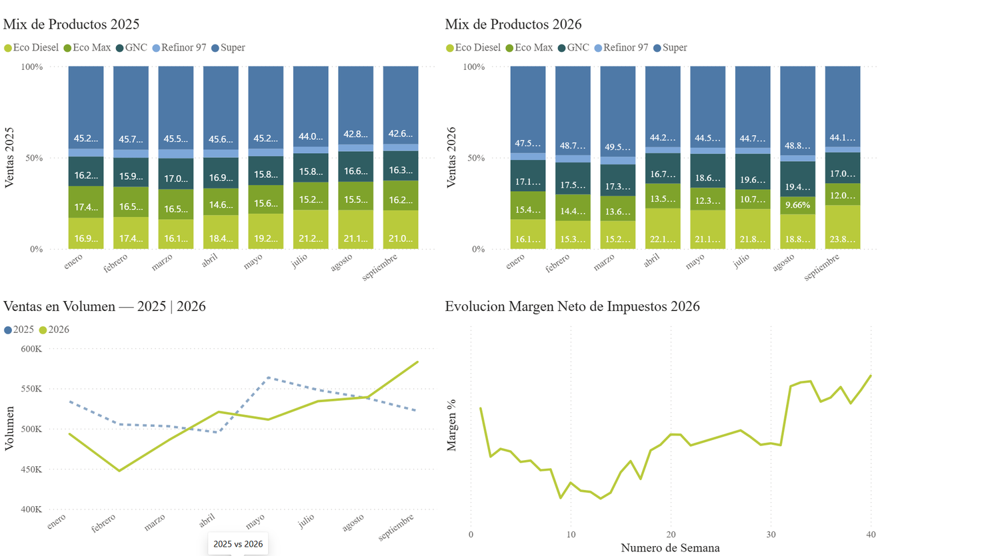

Fuel retail · ArgentinaRetail de combustible · Argentina
The management dashboard that steered a blind businessEl dashboard de dirección que destrabó un negocio a ciegas
ContextContexto
A newly acquired fuel station ran on paper and spreadsheets. Its only system was closed — no API — so leadership had no real visibility and no time to be on-site.Una estación de servicio recién comprada funcionaba con papel y planillas. Su único sistema era cerrado —sin API— así que la dirección no tenía visibilidad real ni tiempo para estar presente.
What I didQué hice
Built a Power BI control panel: daily and per-shift sales volumes rolled up into monthly, year-over-year and annual trends, available to leadership 24/7.Construí un panel de control en Power BI: volúmenes de venta diarios y por turno, consolidados en tendencias mensuales, interanuales y anuales, con acceso 24/7 para la dirección.
ImpactImpacto
It drove real decisions: right-sizing night-shift staffing, capping accounts-receivable at 1/3 of billing without losing volume, catching a client being sold at a loss, and proving in negotiations that we were the #1 selling station under the brand.Destrabó decisiones reales: ajustar la dotación del turno noche, topear las cuentas corrientes en 1/3 de la facturación sin perder volumen, detectar un cliente al que se le vendía a pérdida, y demostrar en una negociación que éramos la estación n°1 bajo la bandera.
+18%sales in 9 monthsventas en 9 meses
+24%best-margin productproducto de mejor margen
~$16kextra revenue / monthrevenue extra / mes
Power BIExcelKPIsData modeling
The dashboards I builtLos dashboards que construí


